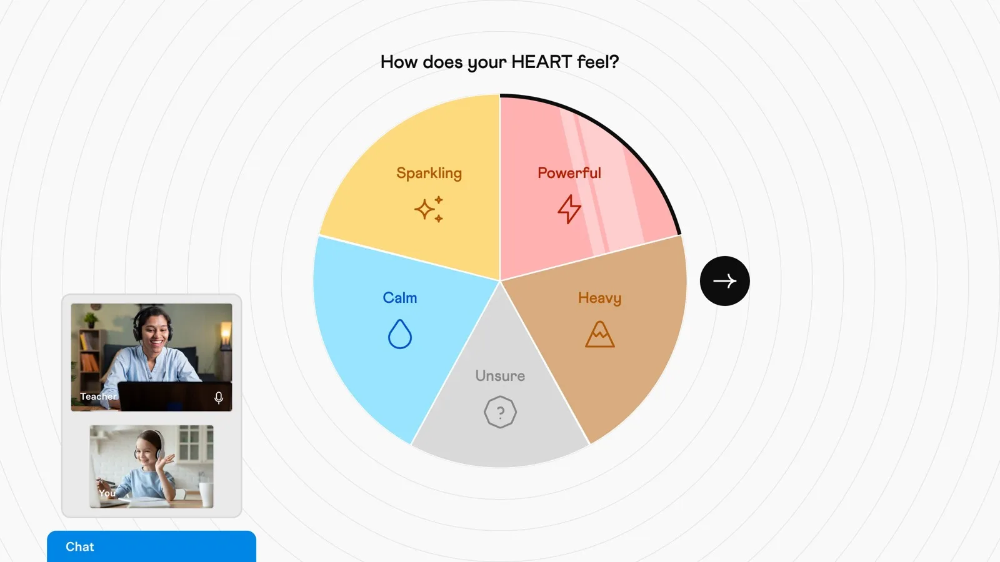
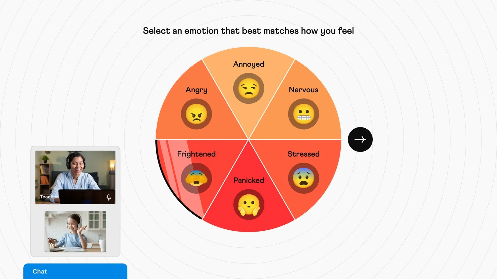
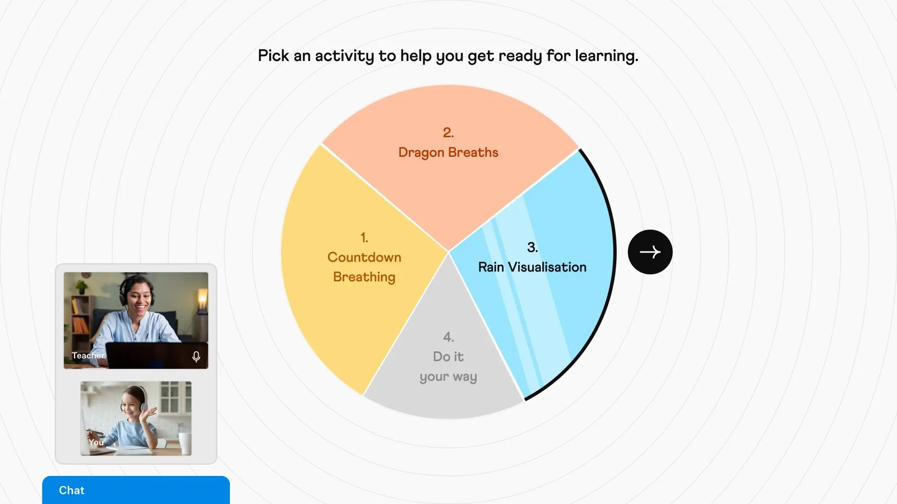
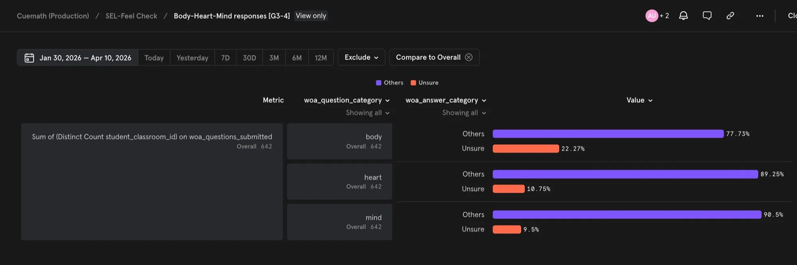
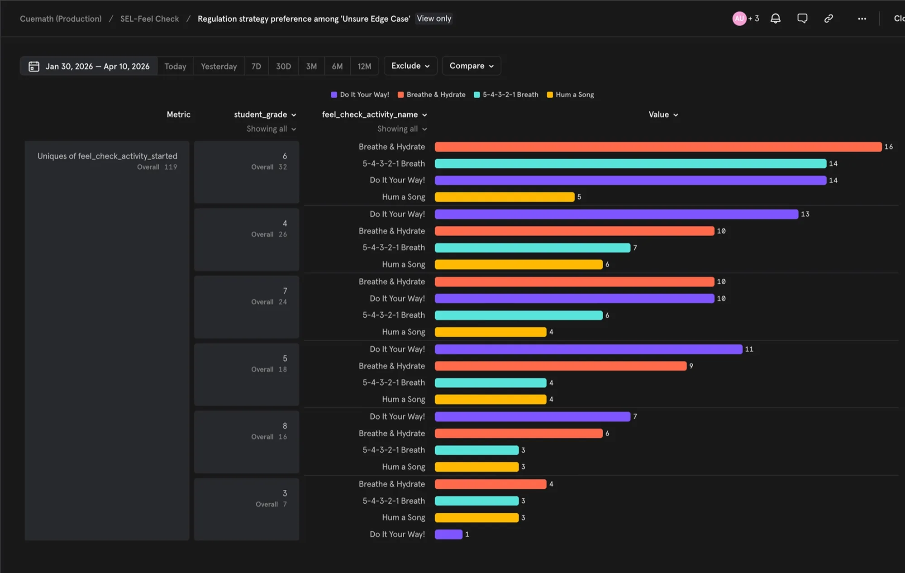
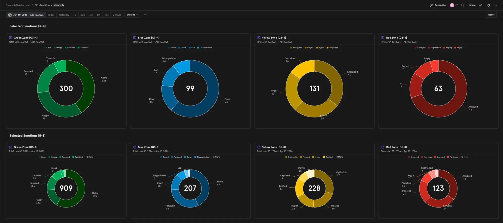
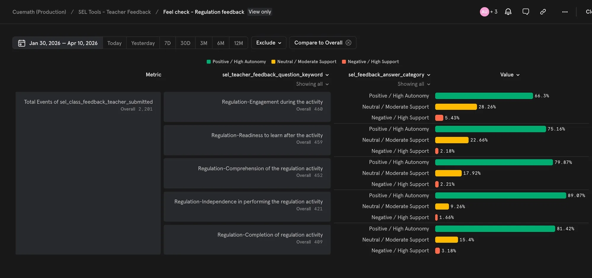
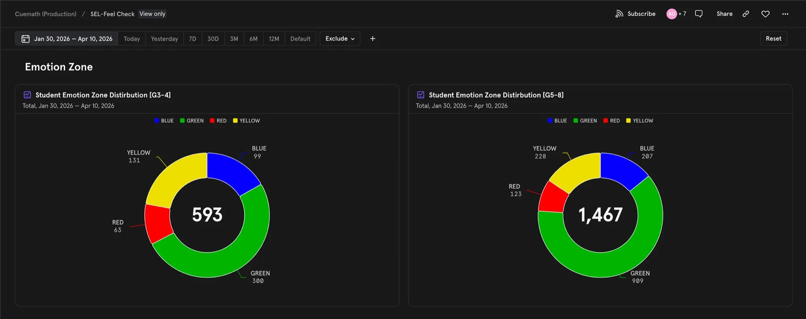

The problem
Students rarely arrive with a clear head — a tough exam, a fight at home, or just a long day can leave them stressed, tired, or distracted. The tutor had no way of knowing. It showed up mid-class. By then, half the session was gone.
Class recordings and in-house tutor feedback showed the same thing again and again. Every tutor handled it differently. There was no standard, and no tool. Weaker sessions meant weaker progress — not what Cuemath promised.
My Role
I owned the design of Feel Check, from clinical spec to a four-phase rollout.
- End-to-end design of the check-in flow — Wheel of Awareness, RULER emotion zones, and regulation activities
- Broader SEL system & support — the complementary tools (Focus Zone, Riddle Zone), a tutor feedback flow, and supporting materials (Tutor Guide, Emotion and Wheel of Awareness options glossary, Comms)
- Cross-functional collaboration — PM (scope), Engineering (build), Curriculum (content), Motion (regulation videos), Roots Global Educational Consultancy (clinical spec)
How Feel Check works
One wheel, three steps. Students reflect on how they feel, name the emotion, then pick a way to reset — all within five minutes before a class begins.



A walkthrough of the live-class flow, recorded by me. Real student sessions stay confidential.
Open in Figma →Decisions
The spec set the bones — frameworks, sequence, and routing. The challenge was designing the experience within the allotted 5 minutes: how a child would move through it.
01Make Unsure a state, not a fallback
The spec had a "Skip" button at Body, Heart, and Mind. But the flow runs on honest reflection — a skipped answer maps to the wrong zone, and regulation built on the wrong zone does nothing for the state the kid is actually in. Uncertainty isn't a failure; it's a real, common state. If an adult isn't always sure how they feel, expecting a child to be sure every time is the wrong bar. So I proposed Unsure in place of Skip — a state the flow registers and routes on, not an exit that throws the reflection away.
But the spec still required students to name an emotion even after three Unsures. Asking a child to name an emotion when they truly don't know isn't a check-in — it's a forced answer. The team agreed: when all three Unsures stack, the flow drops the emotion step and routes to a curated set of activities — meant for "I don't know," not ignored.
| Body | Heart | Mind | Routes to |
|---|---|---|---|
| Tight, fast breath | Heavy | Few thoughts | Blue zone |
| Relaxed, slow breath | Sparkling | Full of thoughts | Yellow zone |
| Tight, fast breath | Powerful | Full of thoughts | Red zone |
| Unsure | Calm | Few thoughts | Green zone |
| Unsure | Heavy | Unsure | Blue zone |
| Unsure | Unsure | Unsure | Curated regulation set |
Body × Heart × Mind → Zone. All Unsure (highlighted): curated set — the case the spec missed.
1 in 5 students selected Unsure at the Body stage — the hardest to name. 254 sessions reached the all-Unsure path; 119 unique students completed an activity from there — no dead end.

Unsure rates per stage by grade band. Body the hardest to name (G3–4: 22.3%, G5–8: 20.5%).

What the 119 all-Unsure students picked, by grade. They engaged with the activities.
02Replace clinical vocabulary with words children actually use
The spec used clinical labels — "Sparkling," "Affirmation," "Set Intention." I doubted they'd land for kids, but Roots was the clinical authority and the team deferred. When I watched the in-house recordings, the doubt held — students hesitated, asked what they meant, or skipped. Vocabulary is interaction. I asked for the change.
Direct synonyms ("Sparkling" → "Joyful") still felt adult. We rewrote them in plain, kid-friendly words ("Affirmation" → "Get Ready!", "Set Intention" → "Set a Goal!") and took it back to Roots to sign off. After rollout, tutors stopped reporting confusion.
Vocabulary varied by age: Grade 3-4 used 4 simpler emotions, Grade 5-8 used 6 more complex — which is why the impact metrics are reported by grade band.

Specific emotions per zone. The rewritten vocabulary held in practice.
03Audio was structural, not decorative
The first version shipped without background audio. The 26 tracks needed across both grade bands couldn't be ready in time, so they were cut to make the deadline. I wasn't sure visuals alone would do the job.
I observed the in-house sessions myself. Regulation was mandatory (no skipping); students had two options — engage and finish, or stall. Most stalled. Phase 1 averaged 2.9 minutes of empty screen time.
I reviewed 24 recordings, spotted the stalling pattern, and proposed shared ambient tracks across similar activities. Shipped before rollout.
Audio strategy
No audio
Visuals stalled students. Phase 1: 2.9 min empty.
Unique track per activity
26 tracks. Couldn't be ready in time.
Shared ambient tracks
Grouped similar activities. Regulation: 1.9 min.
Across Phases 2–4, the empty screen time became 1.9 minutes of real regulation — students settled in instead of stalling. The sensory layer is the work.
Rain Visualisation — one of 26 regulation activities.
Impact
Ready to learn
75.2%
of students were ready to learn after Feel Check (n=459, tutor-observed).
Worked independently
89.1%
Students completed regulation independently (n=421). Student-led design held.
Check-in duration
3.4 min
From start to learning-ready. Within the 5-minute spec.
Tutor feedback rate
98.6%
Averaging 4 sec per response. What makes every metric here trustworthy.
Validation
2,060
Sessions across 4 phases · 411 students · 120 tutors.

Tutor feedback across five regulation dimensions (2,201 responses). All rated positive / high autonomy.
49% of G3-4 sessions and 38% of G5-8 sessions arrived not yet emotionally regulated — the share Feel Check surfaced for a reset.

Zone distribution by grade band. Most arrived in the green zone — emotionally regulated. A meaningful share didn't.
Validated across 4 phases (Jan 30 – Apr 10, 2026): 2,060 sessions, 411 students, 120 tutors.
| Phase | Date | Tutors | Students |
|---|---|---|---|
| 1 (in-house) | 30 Jan | 7 | 14 |
| 2 | 24 Feb | 42 | 249 |
| 3 | 10 Mar | 62 | 102 |
| 4 | 31 Mar | 9 | 46 |
Lessons
What we called a backup, kids made their favorite.
I had built "Do It Your Way" as a backup — the fallback for when none of the guided activities fit. Kids made it their top pick across all four zones. Keeping all four open after the first use let them choose their own way, and given the choice, they took it.
Kids came back for more — even when they didn't have to.
After kids learned the flow, nearly half still chose "try one more" after finishing their first regulation activity. The activity meant to settle them became something they wanted to do again.
Cutting audio was a mistake. I caught and fixed it.
I had accepted cutting audio to hit the deadline. Watching kids stall through silent activities showed me how wrong that was. Spotting the problem wasn't enough — I had to find a fix that shipped. When a cut the team made lands on the user, owning the fix is the job.
I measured "ready to learn." I didn't measure if they actually learned.
Feel Check did what it was built to do — kids arrived more ready for class. We believed that would mean better focus and stronger learning. But measuring whether they actually learned more wasn't the main goal, and I didn't push for a way to check it. Whether Feel Check moved that longer arc — that's the question I still think about.